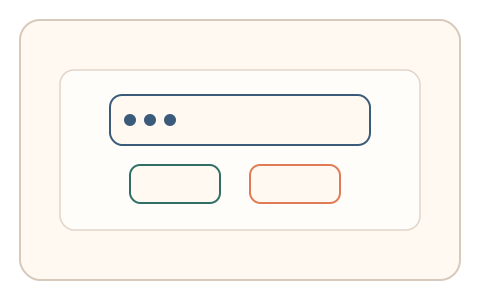
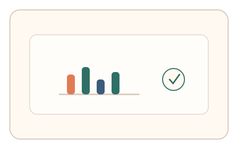

#88
Morphological Analysis - Combination Batches
已扩展
意图一致性延迟
在用户完成操作后延迟弹出微选择题，以意图一致性、注意力路径与反应时验证真实性。
概念原文
用户完成操作后异步弹出与其意图相关的微选择题，系统以注意力路径与历史倾向的异常检测判定。任务结构为异步验证，信号形态为搜索路径与反应时。
以“意图‑路径‑选择”的跨时一致性为核心。
研究背景
真实用户的操作意图会在短时间内保持一致性，延迟后的选择与注意力路径仍具有可预测的倾向。脚本难以在跨时上下文中保持一致，因此可通过异步微任务捕捉在场证明。
核心机制
- 在用户完成核心操作后延迟弹出微选择题。
- 题目与刚才的意图或路径相关，但非直接重复。
- 记录反应时、选择偏向与注意力路径。
- 与历史倾向或群体分布进行比较。
用户流程
- 步骤 1：用户完成主要操作并继续浏览。
- 步骤 2：延迟弹出简短微选择题。
- 步骤 3：系统记录反应时与路径并判定。
判定信号
意图一致性与选择偏向
真实用户的选择与先前意图保持稳定关联。
反应时与注意力路径
在场用户的响应更快且路径更自然。
判定逻辑
一致性与反应时需落在人类分布区间；随机选择或过度稳定判异常。
对抗面
- 脚本尝试记录上下文并固定选择
- 重放真实用户的路径与反应时
防御与缓解
- 随机化延迟时机与题目形式
- 绑定实时状态与多源上下文
- 叠加轨迹与停顿信号进行多信号判定
可达性与风险
提供可跳过或简化任务，避免打断体验并兼容注意力障碍用户。
- 异步弹窗可能造成困扰
- 用户中断导致样本不完整
可视化状态

状态 1：完成操作
用户完成主要任务后继续浏览。

状态 2：延迟微选择
延迟弹出的微选择题。

状态 3：一致判定
对一致性与反应时进行判定。
参考资料
Prospective memory
说明延迟任务中的意图保持机制。
Attention
说明注意力路径与即时反应的关系。